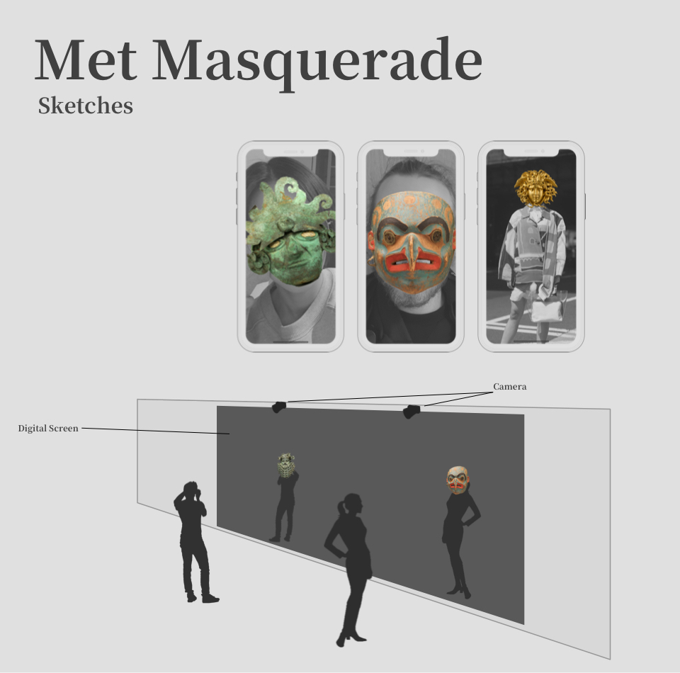
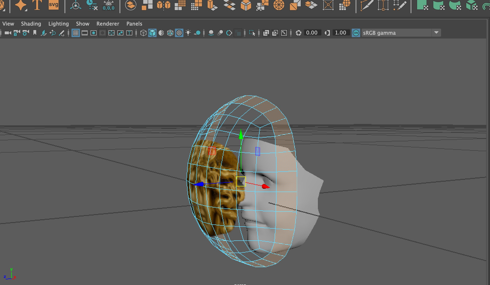
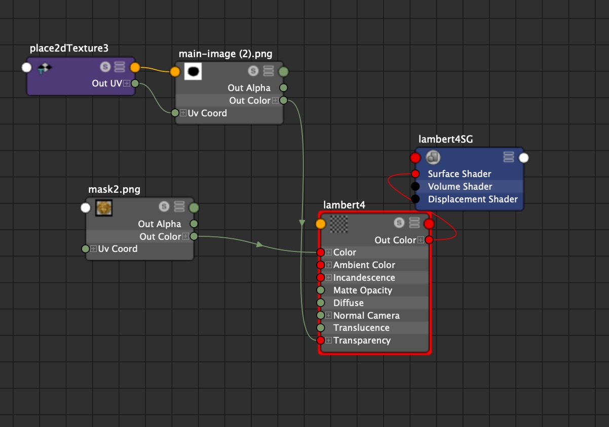
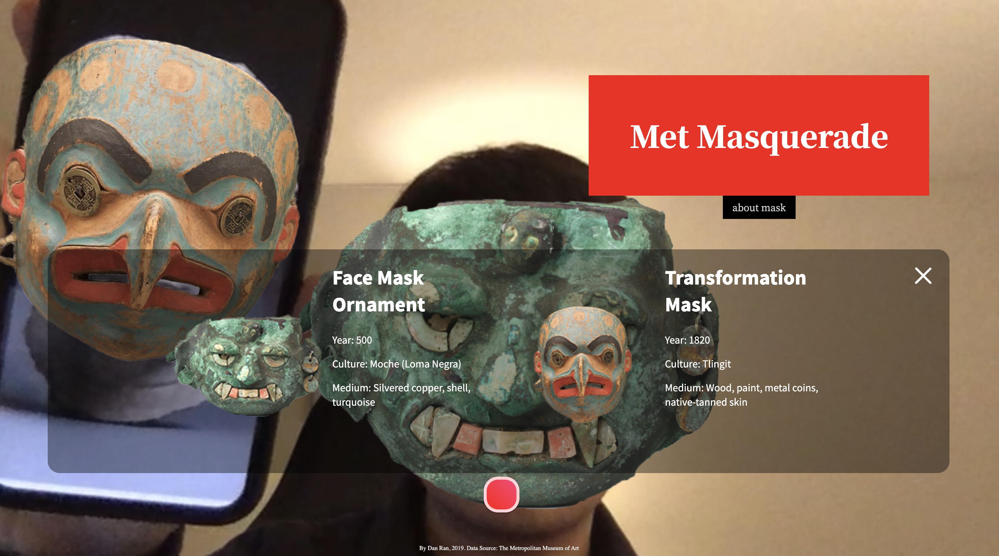

An AR Experience by Dan Ran
This is an AR interactive experience prototype based on the Met’s Mask collection. It’s a multimedia AR experience. The user can experience a Met Masquerade through mobile phone, desktop, or even a large exhibition screen. This app will find a random mask from the Met's collection and put it on the face that the camera detects. The user can save photos or record a video of it. The user will also be able to learn the background information about the Mask they wear.
The Early sketches show the possibility of this project.
All the mask data are requested from the Met's API, and the images are processed in photoshop. 3D models are made for each mask in Maya, and the texture were added later in DeepAR Studio.
In order to make realistic AR mask, UV testing in Maya is essential.
This web-based application is made by using DeepAR SDK. It is capable of tracking multi faces simultaneously. By swiping left or right, the user can try on different masks. They can also take a selfie, or check out and learn the detail information about the antique masks they wear.

Partner: The Metropolitan Museum of Art
Data Source: The Met Collection API